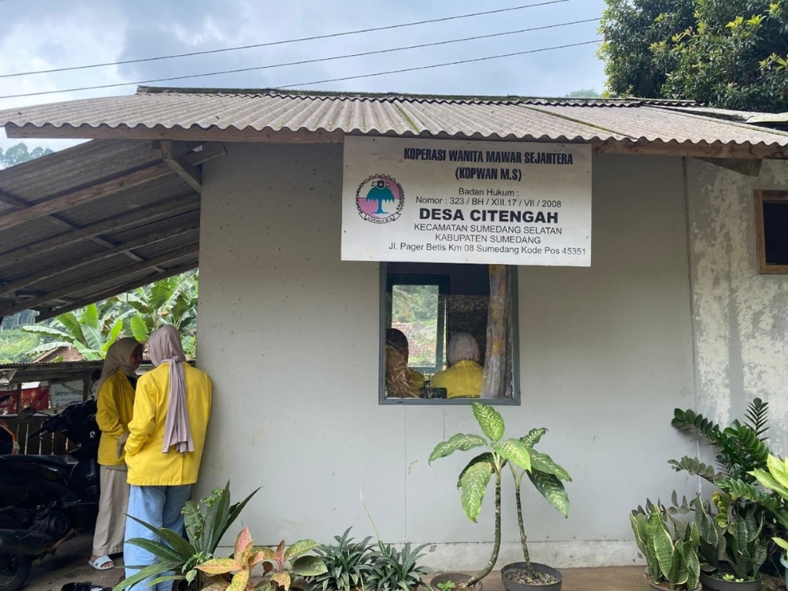

Home / About

Koperasi Konsumen Wanita Mawar Sejahtera merupakan koperasi yang sebagian besar anggotanya adalah perempuan dengan unit usaha utama simpan pinjam. Koperasi ini beralamat di Jalan Pager Betis Km 08 RT 03 RW 01 Desa Citengah, Kecamatan Sumedang Selatan, Kabupaten Sumedang, dengan Nomor Badan Hukum 323/XIII.17/VII/2008 tanggal 17 Juli 2008.
Koperasi Konsumen Wanita Mawar Sejahtera pada awalnya berdiri pada tahun 2002 dengan nama KOTERA (Koperasi Teh Rakyat). Pendirian koperasi ini merupakan gagasan dari almarhumah Hj. Onih Santika yang melihat adanya kebutuhan ekonomi bagi para pemetik teh yang sebagian besar adalah perempuan. Pembentukan koperasi ini bertujuan untuk meningkatkan kesejahteraan anggota melalui kegiatan ekonomi bersama yang berbasis pada semangat kebersamaan dan kemandirian
Seiring dengan perkembangan organisasi dan kebutuhan pengembangan usaha, pada tahun 2005 berdasarkan ide dan kesepakatan pengurus, KOTERA mengalami perubahan nama menjadi Koperasi Konsumen Wanita Mawar Sejahtera. Perubahan nama ini diharapkan mampu mencerminkan harapan agar koperasi dapat berkembang lebih baik, memberikan manfaat yang lebih luas, serta mampu meningkatkan kesejahteraan anggota dan masyarakat sekitar.
"Terwujudnya Koperasi Mawar Sejahtera dengan pelayanan optimal untuk meningkatkan kesejahteraan anggota."
1. Meningkatkan profesionalisme pengelola koperasi yang meliputi pengurus, pengawas, dan karyawan.
2. Meningkatkan mutu manajemen serta tata kelola koperasi yang transparan dan akuntabel.
3. Meningkatkan partisipasi anggota sebagai pemilik sekaligus pengguna jasa koperasi.
4. Mengoptimalkan sumber daya yang dimiliki untuk meningkatkan pelayanan dan kegiatan usaha koperasi.
5. Melakukan kerja sama dengan berbagai pihak dalam rangka pengembangan